Introducción
1. Control de calidad
Con el crecimiento de la industrialización, se requería ejercer control en los procesos para disminuir los desperdicios y los reprocesos en la producción, cada vez con niveles de unidades más altas, se necesitaba estandarizar las características del producto fabricado.
Teniendo en cuenta lo mencionado, revisar la producción proporciona mejor confianza en el cliente, mejorar la competitividad y como herramienta en la administración de la empresa.
Es importante mencionar los principios de la calidad para desarrollar el control de esta:

Mejora continua.
Evitar inspecciones masivas.
Relación de precio y calidad.
Métodos modernos de capacitación y entrenamiento.
Exigencia de la competitividad.
Identificación del trabajador con sus funciones y su aporte con la calidad.
Eliminación de barreras entre áreas.
Establecer ruta de la calidad.
Acciones con el fin de transformar la empresa hacia la calidad.
1.1 Concepto de calidad
Teniendo en cuenta los términos de los estudiosos se puede determinar que satisfacción, cliente, necesidades, mercado, expectativas son las palabras comunes, que engloban el concepto para concluir que la calidad es nivel de satisfacción del cliente cumpliendo con los requisitos, es decir las necesidades y expectativas del cliente.
Una vez se tiene definidos los objetivos de calidad y los requisitos de calidad del producto, se entiende que se deben controlar las variaciones de esas características, cualidades o especificaciones exigidas sea por el cliente o de acuerdo con una norma.
Mejor llamado como control estadístico de la calidad, es el proceso conformado por una serie de técnicas para analizar el comportamiento de las variaciones de los requisitos del producto con el fin de establecer acciones que mejoren el producto, su calidad, en pro de aumentar las ventas además de la productividad de la empresa.
El control de calidad no sólo está encaminada a las inspecciones del producto terminado, sino de igual importancia las inspecciones del producto durante el proceso de producción y la materia prima e insumos.
El cliente es la persona que adquiere el producto o servicio, puede o no utilizarlo y es quien paga por ello.
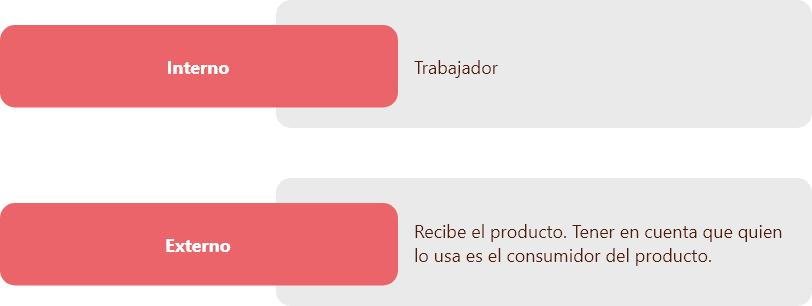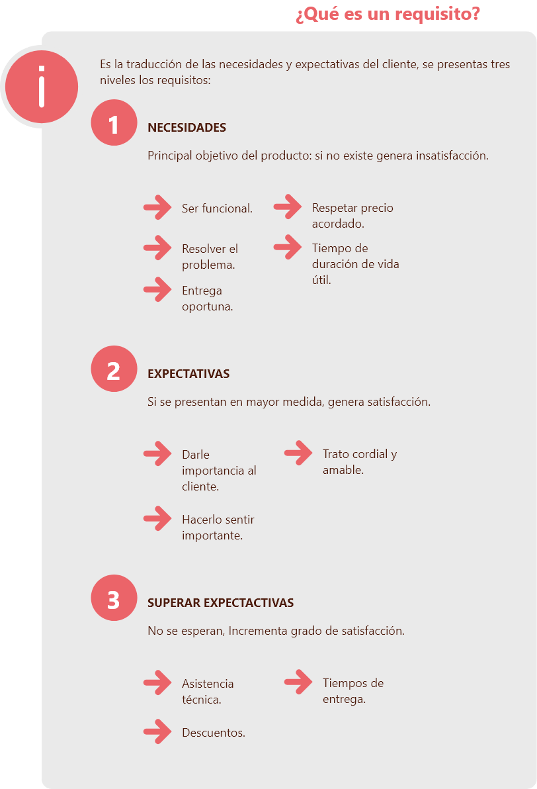Existen tipos de requisitos relacionados con:
Función del producto: referencia a su desempeño, responde a la pregunta para que sirve.
Características técnicas: cantidades, peso, tamaño, color, entre otras.
Condiciones de pago y precio.
Plazos de entrega.
Especificaciones dadas por el cliente.
Mantenimientos y vida útil: instrucciones de uso y términos de garantía.
Legales: leyes y normas: rotulados, materiales, uso, residuos.
Conforme lo mencionado anteriormente también podemos clasificar los requisitos de acuerdo con las características directas del producto, de la organización o externos como es el cliente y la normatividad.
Dado que se presentan variaciones en los productos es preciso permitir tolerancias, las cuales son márgenes permisibles de variación.
Antecedentes y evolución de control de calidad
Al ubicarse de manera temporal en el cambio de la fabricación artesanal a la industrialización, derivada de la revolución industrial, los cambios en la producción de una manera masificada; su auge se presentó en los años de la década de 1910 en la industria del automóvil liderada por Henry Ford, donde se daba los inicios de la calidad en las inspecciones de producto terminado. Con el avance de la tecnología, estudios del trabajo e implementación de técnicas para aumentar la productividad, buscando la estandarización del producto, la calidad gana la importancia dentro del desempeño del negocio, pues derivado de los niveles de calidad del producto se satisface al cliente. Hoy en día, derivada de la cuarta revolución industrial el proceso de control de calidad se viene automatizando, para análisis y predicción de fallas, sin olvidar que las personas siguen haciendo parte, al gestionar de manera integral la cadena de suministro.
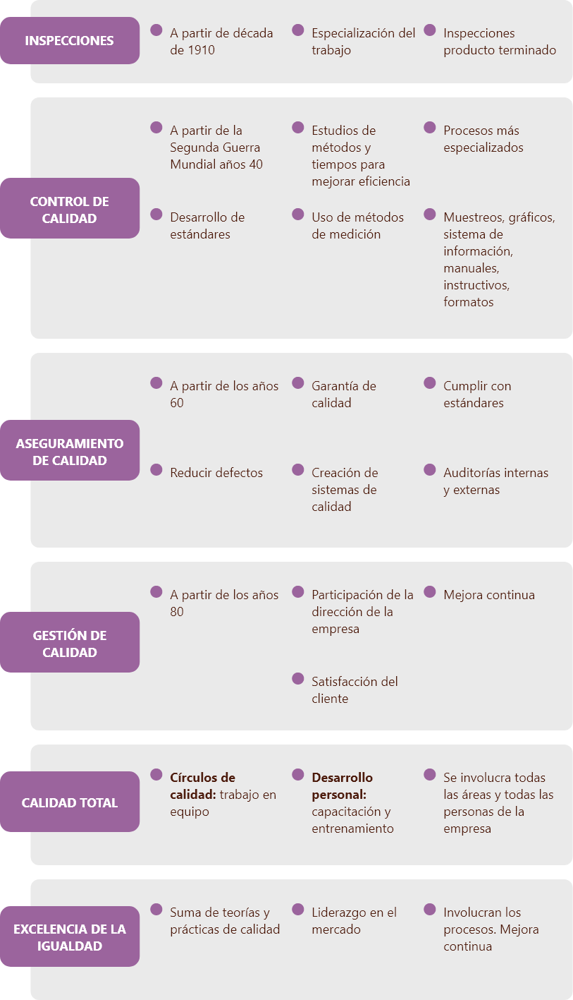Control de calidad en industrial textil y confección
Se controla la calidad con el fin de mantener y corregir los defectos, errores o no conformidades que se presentan durante la producción de la prenda.
Por tanto, se desarrolla según las variables y atributos del producto. Los beneficios de implementar las herramientas para controlar la calidad son:
Reducir costos.
Reducir defectos.
Obtener productos estandarizados.
Disminución de desperdicios.
Mejoras de los procesos.
Aumento de la productividad.
De acuerdo con lo mencionado, el control de la calidad en la industria se realiza en procesos y en los recursos que intervienen en la producción de la prenda, desde el diseño de la prenda, el patronaje; la materia prima, para el caso la tela; los insumos entre los que se destaca el hilo; en confección las costuras; en el empaque, embalaje y entrega al cliente asociadas a las características de cada proceso y de cada material.
El control de calidad se realiza en las siguientes fases:
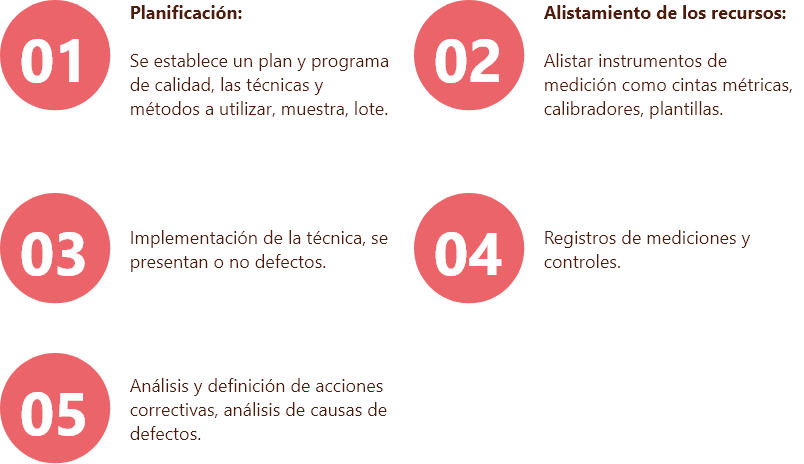Mejora continua con el fin de prever ocurrencias de la no conformidad, toma de decisiones.
Automatización en control de calidad en la industria textil y confección
Se denomina Calidad 4.0, relacionada con la revolución digital, teniendo en cuenta las tecnologías de big data, inteligencia artificial, machine learning, Deep learning, internet de las cosas. La automatización de los procesos proporciona agilidad, más seguridad en los datos porque disminuye la presentación de datos incorrectos y más conocimiento sobre cada área de la empresa.
La implementación básica se refiere con la utilización de software especializadas en las herramientas de calidad como por ejemplo programas de SPSS, STATGRAPHICS CENTURION, SAS, las relacionadas con el internet de las cosas como la geolocalización con aplicaciones como los códigos QR, y las relacionadas con las herramientas de lean manufacturing.
Con la integración de datos y su tratamiento avanzado se puede simular los procesos para mejorar la gestión de calidad virtual. Además, las personas encargadas directamente con la calidad pueden desarrollar actividades de manera remota sin necesidad de su presencia in situ de la empresa. También puede apoyar en la planificación de auditorías en el mejoramiento de implementación de las 5’S.
1.2 Gestión de Calidad total
La comunicación interna también debe estar bien organizada, contar con un sistema de comunicación adecuado para evitar duplicidades de información que afecten negativamente la gestión de la calidad.
Para reconocer la gestión en los procesos se debe tener en cuenta el ciclo Deming de la calidad, sobre el cual se construyen los sistemas de gestión. En la siguiente figura se aprecia como se constituye el ciclo de la calidad para la mejora continua.
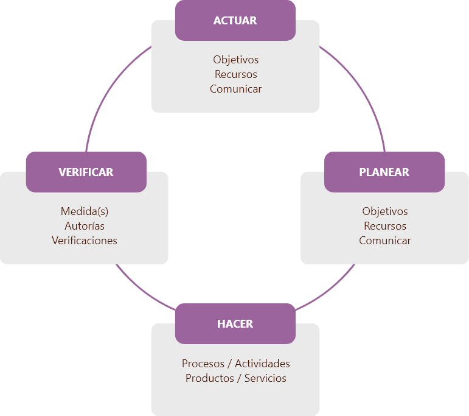Cultura de calidad
Son los principios de calidad que rigen la forma de actuar de las personas que hacen parte de la organización, para que interactúen entre ellas y lograr en equipo los objetivos propuestos.
Esta base definida en términos de valores y hábitos, del quehacer diario de todos los que trabajan en la empresa, su implementación requiere de capacitación efectiva y constante, interacción con una comunicación asertiva y eficaz para seguir construyendo una cultura de calidad sólida; la metodología utilizada son los círculos de calidad desarrollados por Kauro Ishikawa. En la siguiente figura se aprecia los componentes de los círculos de calidad.
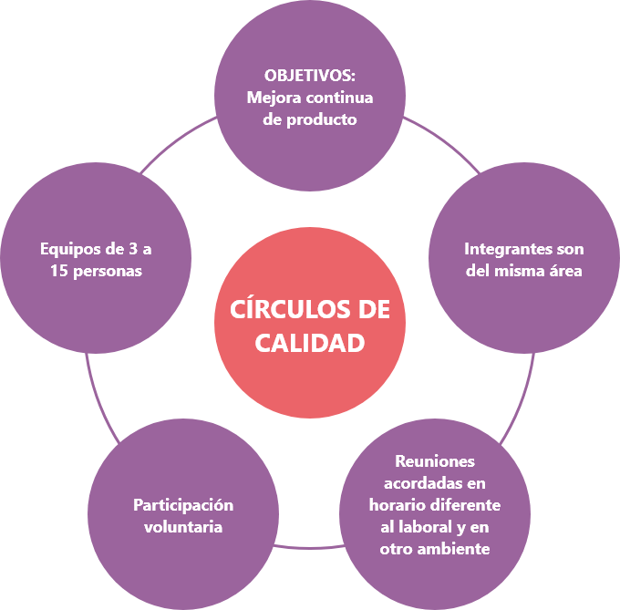Metodología de mejoramiento continuo
La metodología se encuentra enmarcada dentro del ciclo de mejoramiento continuo en donde se desarrollan 13 pasos. La participación es de todo el personal involucrado en la empresa, para que el mejoramiento sea constante, es un trabajo diario. Los elementos del KAIZEN son:
Trabajo en equipo.
Disciplina personal.
Moral mejorada.
Círculos de calidad.
Sugerencias para la mejoría.
Para conocer sobre la metodología KAIZEN, leer la ESTRATEGIA KAIZEN de la bibliografía (Lefcovich, 2009)
Hablamos de KAIZEN, estrategia desarrollada en Japón una vez terminada la II guerra mundial. Para iniciar se debe considerar el análisis del problema en la siguiente figura podemos observar el análisis de los diferentes aspectos para tener en cuenta:
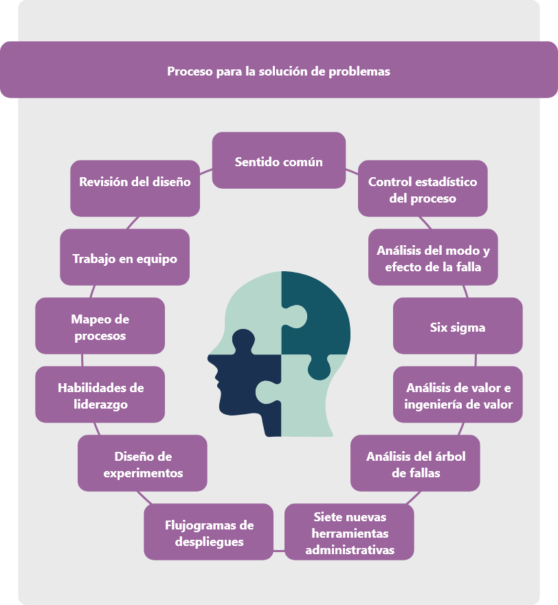A continuación, puede observar los 13 pasos de la metodología especificados en la siguiente tabla:
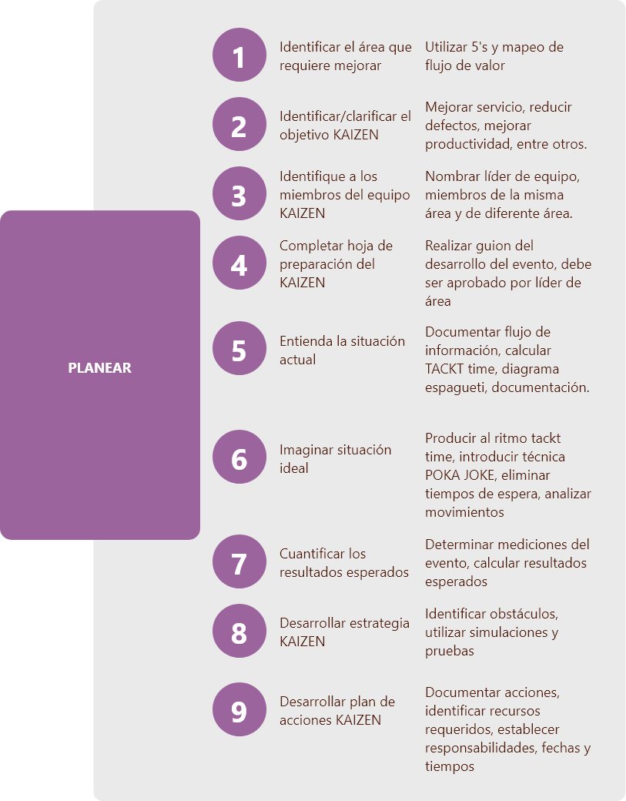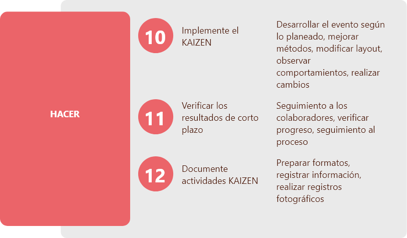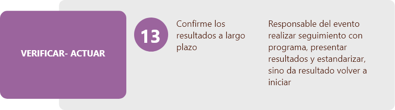Tabla Recuperada de: Material de formación - Equipo de desarrollo curricular Tec. Control Calidad en Confección Industrial – SENA 2020
Six sigma
Es un modelo de gestión, se conoce por sus siglas en ingles DMAIC, el objetivo es el mejoramiento de los procesos; cuya traducción es asociada a las siguientes palabras:
Definir: el objetivo del problema o defecto para validar, además de los miembros del programa.
Medir: Entender el problema o defecto.
Analizar: investigar causas reales del problema o defecto.
Mejorar: determinar las mejoras.
Controlar: tomar medidas para mantener el progreso, valorando en términos económicos y el nivel de satisfacción al cliente.
El nombre proviene en los casos en que se presenta una menor variación entre los datos y así mismo es la desviación standard es menor y por lo tanto mayor va a ser la sigma alcanzando el nivel 6.
Para conocer más sobre el modelo visitar ("sigma Six Lean solutions", 2020), además leer en línea el libro Lean Six Sigma.
En cada fase se utilizan herramientas para el análisis y gráficos como: Histogramas, diagrama causa efecto, Pareto, gráficos de tendencias, análisis de correlación, capacidad del proceso, gráficos de control, entre otros.
Costos de calidad
La meta general de la empresa es ser rentable, generar ganancias, por eso la relación de la calidad con el precio se debe analizar, concientizando al personal de su importancia.
La clasificación de los costos de calidad ayuda a entender y concientizar la importancia en procurar el control de los costos de calidad. En la siguiente figura se puede observar los tipos de costos de calidad:
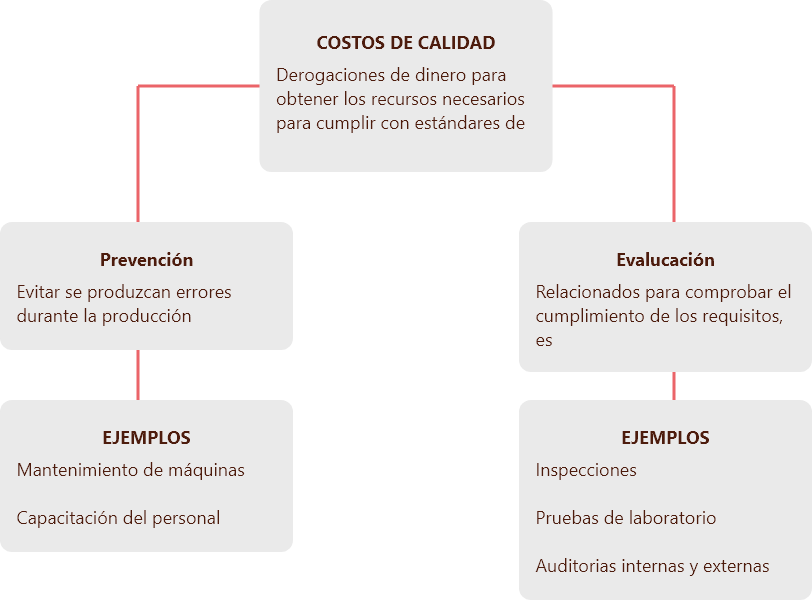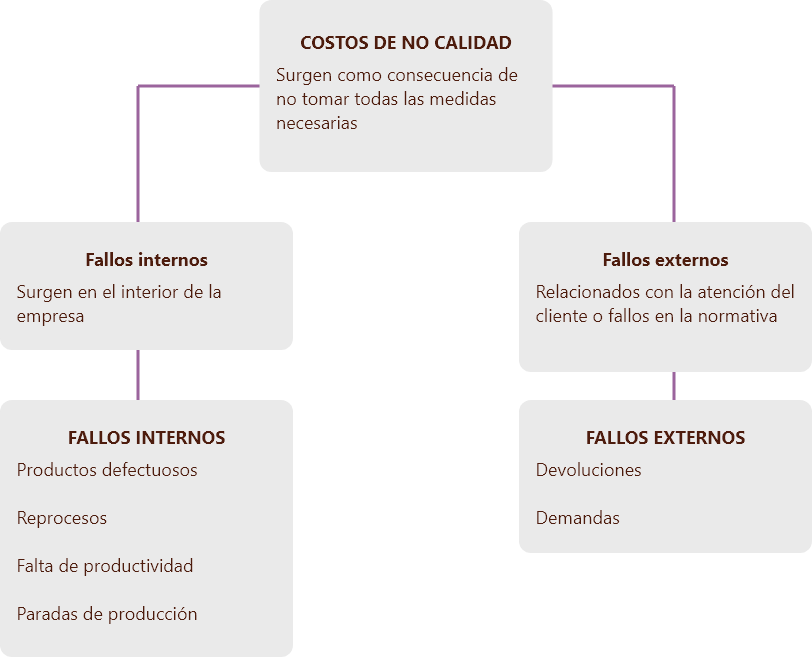Sistema de Gestión de Calidad: Norma ISO 9001 ver 2015
El sistema de gestión es una herramienta administrativa, cuenta con una estructura organizada para integrar todos los procesos, integrando los elementos necesarios para lograr cumplir las necesidades y expectativas del cliente. Obtener la certificación es evidenciar la capacidad que tiene la empresa con cumplir con los requisitos. Una vez certificada la empresa su vigencia es de 3 años, con auditorias de seguimiento y una vez pasados los tres años se debe realizar auditoría de renovación.
La certificación es una constancia de valor a nivel internacional. El enfoque de la norma es basado en los riesgos, en donde la empresa demuestre la gestión de los riesgos y las oportunidades que pueda afectar la capacidad de proporcionar satisfacción al cliente y los resultados esperados de la empresa.
La norma específica que debe hacerse, pero no como hacerlo. Para la norma es primordial que la información se encuentre documentada.
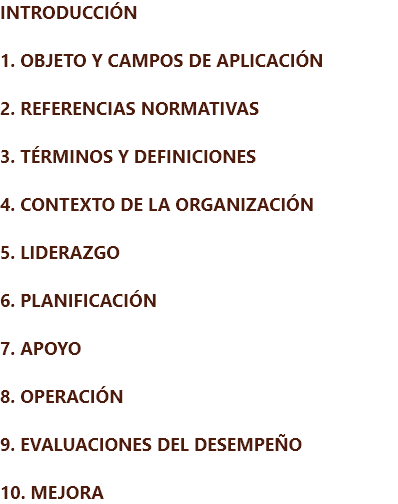1.3 Puntos de control en el proceso de confección
Se debe establecer diferencia entre los puntos de control y los puntos de control crítico, para tener claridad en el control de calidad de la prenda. Una vez analizamos el flujo de los procesos mediante los diagramas de árbol y flujogramas, se determina en el proceso y en la prenda, los puntos a inspeccionar según su relevancia y así se establece clasificación.
En el patronaje se debe inspeccionar número de piezas, anchos de costuras, medidas de patrón y de prenda terminada. Además, las medidas en cortes para unión de piezas cada lado a unir debe corresponder, se debe disponer del tiempo necesario para realizar la revisión sean en un patrón manual o en el programa especializado.
En el momento del desarrollo del producto se debe realizar la inspección, de tal forma que se compare junto con la muestra y así pueda ser aprobada y pasar a los procesos de producción.
Puntos de control en trazo y corte
Una vez se desarrolle el trazo, antes de imprimir en el caso que sea digital y antes de realizar el extendido de la tela; se debe inspeccionar el trazo, revisando la correspondencia de piezas y distribución de tallas teniendo en cuenta orden de producción, ancho de trazo y ancho de tela.
En el corte se debe revisar una vez se termina de extender y antes de iniciar el corte las unidades de capas y alineación del tendido, la apariencia de la tela, también tener cuidado de la separación del corte, sobre todo en el caso de si se han extendido diferentes rollos de tela en el mismo corte. Se debe revisar el cumplimiento de tiempos de reposo.
En la separación, tiqueteado y paqueteo de las piezas, el inspector de calidad debe revisar el corte de las piezas al comparar con el patronaje de la pieza, contar las piezas del paquete, el sistema de amarre y rotulado. Es importante de disponer de un puesto de trabajo para la inspección con excelente luz y limpieza para determinar defectos en la tela y en el corte de las piezas. Es importante la disposición de las piezas para evitar contaminaciones del paquete con otros colores, por ejemplo, de la referencia.
Puntos de control en confección

Teniendo en cuenta los procesos dentro de la confección de las prendas, comprendidos por operaciones de preparación, ensamble y terminados, así mismo se establecen puntos de control en las áreas, es importante establecer los puestos de calidad, en donde se realizan las inspecciones por el inspector de calidad; en el caso que el sistema de la planta sea modular, cada módulo debe disponer del puesto de calidad. Cada puesto debe disponer de las herramientas para realizar mediciones y formatos, además de una ubicación estratégica dentro del área.
Aunque es importante la implementación de auto calidad en cada operario, de igual manera se debe realizar las inspecciones llamadas” en pie de máquina”; se realiza mientras el operario desarrolla la operación en su puesto de trabajo, con el fin de detectar de manera temprana defectos, además de establecer acciones de mejora. Cuando al producto se realiza procesos de estampación o bordados se requiere establecer puntos de control de esos procesos, los cuales son puntos de control críticos.
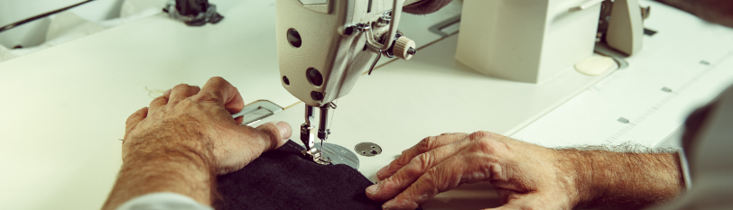Puntos de control en producto terminado
Al finalizar la confección en cada módulo de producción o línea de la referencia, se revisa el producto terminado antes de realizar proceso de planchado, procesos de lavandería, empaque y embalaje; pero igualmente se debe inspeccionar una vez sea realice el planchado si es requerido y su empaque. Se debe establecer las medidas para la atención de prendas que no fueron aceptadas en las inspecciones y las acciones para su tratamiento.
Puntos de control en confección de lote piloto
El lote piloto son unas unidades que se confeccionan con el fin de simular la producción de cierta referencia nueva. Es necesario una vez se desarrolla el producto nuevo, realizar simulaciones para prever fallas en la producción, la información proporcionada una vez se realice el lote piloto brinda confianza y señala las estrategias a efectuar en el momento de la producción de la prenda.
Puntos de control en compras: materiales e insumos
En las áreas de bodegas y almacenes se deben realizar las inspecciones necesarias antes de la integración del producto, en donde se realiza el alistamiento de los insumos necesarios para la confección y se integran al paquete de las unidades cortadas según las unidades establecidas. En el caso de telas se puede apoyar el control con equipos como revisadoras de telas para inspeccionar los defectos.
1.4 Control de Calidad en patronaje
El control de los procesos es, comprender cuales son las variaciones en las características del producto, encontrar las causas y tomar las decisiones para controlar la variabilidad, eliminando los errores, estandarizando el proceso y establecer mejoras para tener una variabilidad controlada.
En el proceso de patronaje la persona responsable del patronaje de la prenda, junto con el auditor de calidad realizan la revisión del paquete de moldes o patrones que comprenden la pieza, es importante revisarlos en físico, a pesar se desarrollen la prenda en programa especializado en computador.
Una vez se desarrolla la prenda la validación de los patrones debe estar contenida en un documento de revisión de patronaje.
Requisitos de calidad en patronaje
Los productos tienen variables y atributos, las variables son características cuantitativas y los atributos son las características no cuantificables, los cuales unidos son los requisitos de una prenda.
Los requisitos además están clasificados de la siguiente manera:
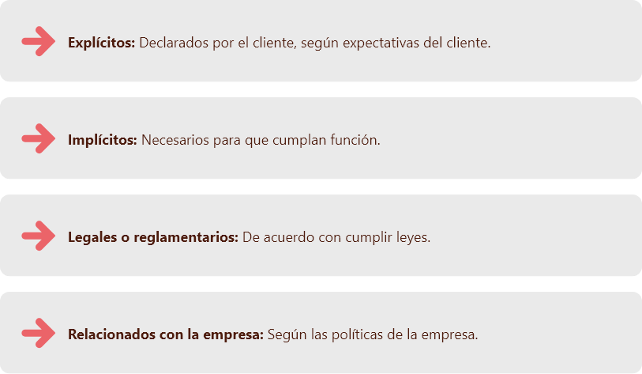Los requisitos para revisar en patronaje son:
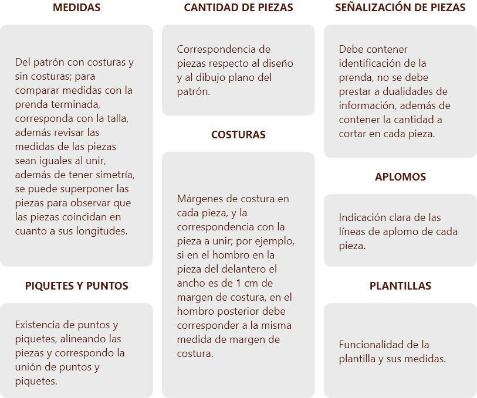1.5 Control de Calidad en trazo y corte
Las personas encargadas de cada actividad en el área deben contar con comunicación abierta para coordinar el proceso debido a que el error en el área, se replica igualmente en la producción, con relación a lo anterior es importante detectar el problema a tiempo. Es primordial contar con la trazabilidad de la producción, para ubicar fácilmente cada lote, poder intervenir rápidamente en los productos a corregir y dar respuesta rápida para solucionar el inconveniente.
Los documentos utilizados en el área para controlar el corte, además de la orden de producción, son las inspecciones en corte para revisar cada actividad. Además de un formato que se puede anexar en el paqueteo donde se validen las unidades de cada pieza en cada paquete, siendo un apoyo visual importante en el alistamiento del proceso de confección.
Requisitos de calidad en trazo y corte
Los requisitos para revisar en cada actividad son los siguientes:
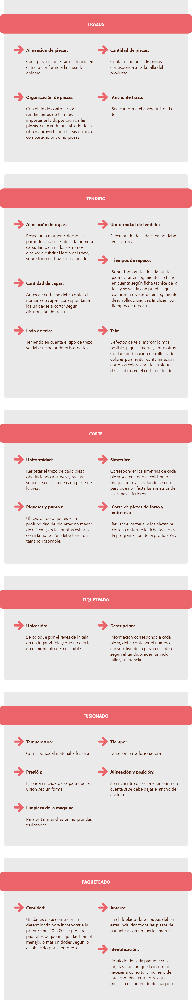1.6 Control de Calidad en confección
Teniendo en cuenta la distribución de las operaciones, es decir la hoja de ruta; operaciones de preparación, ensamble y terminados, cada operación tiene un método, un tiempo estándar, y la descripción de maquinaria, pies, guías, fólderes y aditamentos que se deben revisar.
En los puntos de revisión se realizan inspecciones, donde se retienen prendas o piezas con defectos para analizar las causas y determinar acciones, así mismo en los puestos de trabajo con auto calidad, donde la responsabilidad es de cada operario con acompañamiento y el apoyo del auditor de calidad en pie de máquina. Conforme corresponda la inspección se utilizan los formatos de inspecciones de producto terminado y producto en proceso.
Los factores para tener en cuenta además de los anteriormente mencionados que son directos al proceso, también existen factores ambientales como la iluminación, ventilación, temperatura, ruido, espacio y aseo; factores humanos relacionados con el personal como la capacitación y las relaciones entre el personal, los cuales afectan los resultados en los productos y por ende en la calidad de estos.
También se pueden realizar pruebas o ensayos en laboratorios especializados que evalúen la prenda según normas nacionales e internacionales, uno de ellos es la prueba de uso en la que se compara los resultados planteados y los reales obtenidos.
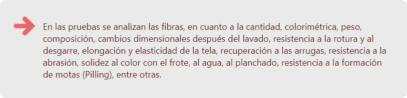En el siguiente cuadro podemos observar algunos ensayos con la norma relacionada que se puede realizar a la prenda.
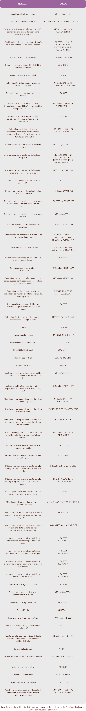Requisitos de calidad en confección
Los requisitos que se deben cumplir en la confección y son objetos de control son:
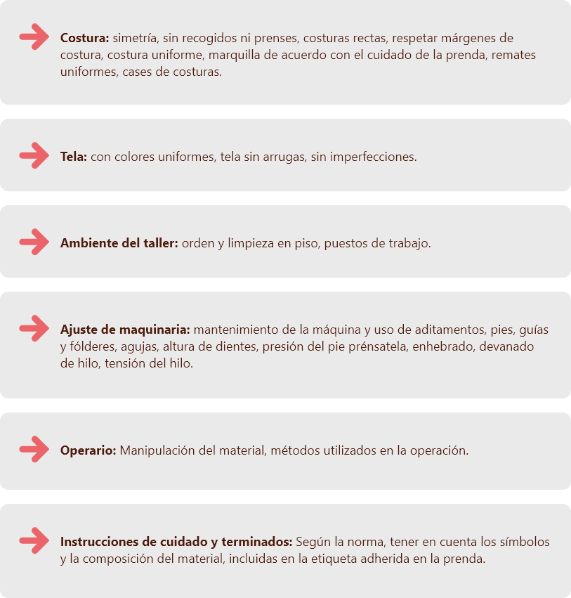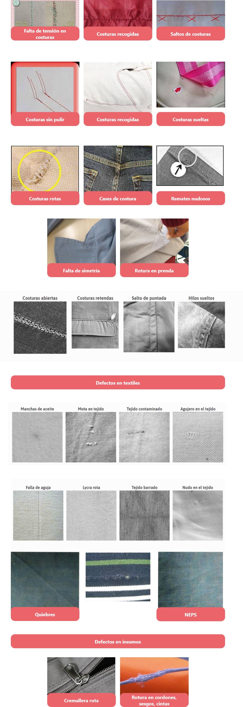1.7 Control de Calidad en terminados
En los terminados se incluyen procesos de planchado, empaque, embalaje y procesos de acabados como lavandería, estampación y bordado.
Puede ser que los procesos de acabados pueden desarrollarse de manera externa a la empresa, es decir contratar los servicios, y por lo tanto la importancia de los puntos de control una vez ingresen a la planta, validar las prendas o piezas una vez se realicen los procesos.
El planchado es la última operación del proceso de producción, es necesario que las personas responsables de la sección tengan los criterios claros para evaluar las prendas que pasarán a las operaciones para la entrega al cliente.
Requisitos de calidad en acabados
Los requisitos para revisar en cada una de las actividades del proceso de acabados son los siguientes:
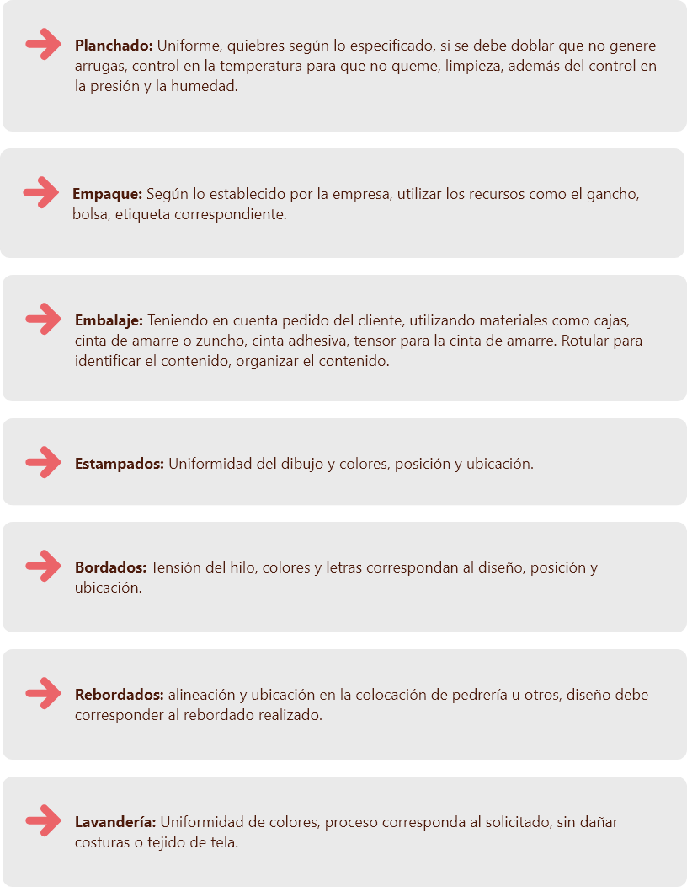1.8 Control de calidad en insumos, materiales y textiles
La comunicación con la cadena de abastecimiento es muy importante para solucionar de manera eficiente los problemas derivados que puedan ocurrir en la producción de las prendas.
Los espacios disponibles para recibir los diferentes elementos deben cumplir con condiciones óptimas de ventilación, iluminación, seguridad, aseo y organización, que afectan los requerimientos de calidad en la cadena productiva. El control de inventarios está relacionado directamente con el control de calidad, para generar las mejoras de toda la gestión de la empresa.
En las entradas del proceso de producción uno de los recursos son los insumos y materias primas, las revisiones de calidad responde a uno de los principios de calidad que es hacer las cosas bien desde el principio, dando la relevancia para asegurar el flujo de los procesos, así mismo al finalizar el proceso de producción se requieren materiales para la entrega del producto al cliente, los cuales de igual manera se deben validar.
Los requisitos necesarios para cumplir con las solicitudes de insumos son:
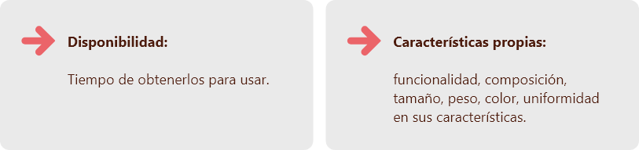En los casos de hilos se analizan propiedades como elasticidad, flexibilidad, durabilidad, resistencia a rotura, tenacidad, solidez al color, uniformidad de tono y grosor. En los elásticos es importante realizar pruebas de recuperación de su longitud, teniendo en cuenta el reposo y la tensión ejercida en su elongación. Es importante controlar desperdicios generados en la producción de los insumos, los cuales inciden en el costo del producto, de allí la importancia del control de los consumos en la planta.
El siguiente cuadro muestra pruebas especializadas que se realizan, para evaluar características de algunos insumos:
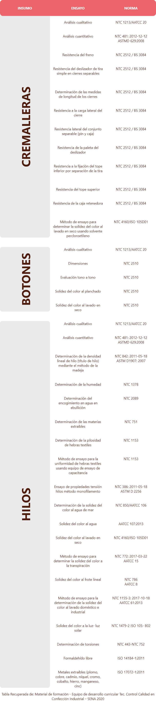Control de calidad de materiales
Los materiales que apoyan la producción como es el caso en mayor medida de la papelería, sus especificaciones técnicas deben corresponder a su aplicación en el proceso productivo.
Para validar el uso de los materiales en las diferentes áreas se inspeccionan los siguientes requisitos:
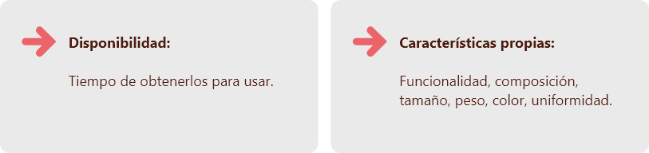Control de calidad en textiles
En el caso de los textiles, teniendo en cuenta las propiedades asociadas a su composición se realizan las inspecciones en las que pueden ser observables con detenimiento, pero es necesario realizar pruebas de laboratorio que garanticen la calidad para su utilización.
Se tienen en cuenta algunas de ellas como muestra el siguiente cuadro:
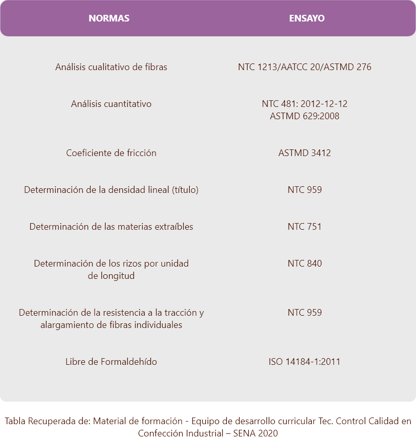La tela es la materia prima que más consume la prenda, es por eso se debe revisar la uniformidad del color, sin deshilados, huecos, motas, contaminación de otros hilos, textura de acuerdo con el tejido es decir que no tenga arrugas no relacionadas a su textura, limpieza, anchos de tela parejos, orillo de tela.
Es importante revisar el comportamiento del textil al contacto con el agua y las temperaturas sobre todo las altas, en el dado caso la pieza, necesite de realizar fusionados y lo relacionado al planchado. Al lavar la tela se puede observar la recuperación y formación de arrugas, la solidez del color para que no migre en el dado caso que se presente combinaciones de colores en las piezas y uso de insumos.
También se debe tener en cuenta en las fibras, los efectos del contacto con bacterias y microorganismos, su incidencia en la durabilidad. Así mismo el contacto con fluidos corporales como sangre, saliva o sudoración.
2. Elaboración de prototipos en tejido de punto
La elaboración de prototipos en tejido de punto se enfoca principalmente en la elaboración de línea interior y línea deportiva, donde se desarrollan gran variedad de productos, pasando por prendas delicadas, de manipulación cuidadosa, debido al material y tamaño de las piezas. Requiere de maquinaria básica, además contar con aditamentos como dosificadores de elástico en fileteadoras, recubridoras, encauchadora, guías y fólderes especiales para asegurar la calidad de las costuras. También se incluye en el proceso máquinas zigzadoras y presilladoras.
Los materiales utilizados requieren un manejo con mayor habilidad sobre todo en las prendas de tejido de punto, incluyendo con composición de elastano.
2.1 Confección panty femenino
En el mercado existen cada vez mejores atributos y funcionalidades en este tipo de prendas, sirven de ejemplo, pantys control de abdomen, pantys 0 costuras. Las máquinas donde se realizan el ensamble son fileteadoras de tres hilos, recubridoras con dosificadores, fólderes sesgadores con dosificación de elástico, zigzadoras y presilladoras.
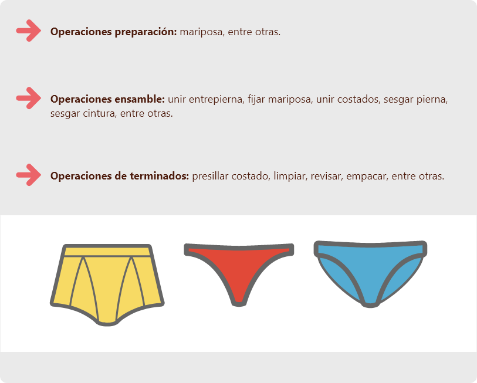2.2 Confección bóxer masculino
La prenda requiere de máquina fileteadora 3 hilos o con 4 hilos, con dosificadores de elástico, recubridoras con dosificador de elástico, presilladora. Este tipo de prendas pueden ensamblar en la máquina flat seamer, que les da más seguridad a las costuras.
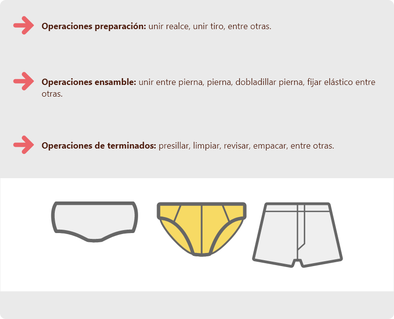2.3 Confección de camiseta tipo polo
En relación con la confección de la camiseta, se debe contar con las máquinas básicas, plana, fileteadora y recubridora. Se recomienda utilizar la fileteadora con puntada de refuerzo (4 hilos).
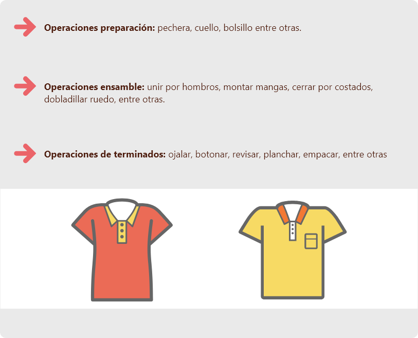2.4 Confección de pantalón sudadera
En cuanto al pantalón de sudadera, se utilizan además de maquinaria básicas, máquinas especiales como encauchadora para sentar el elástico.
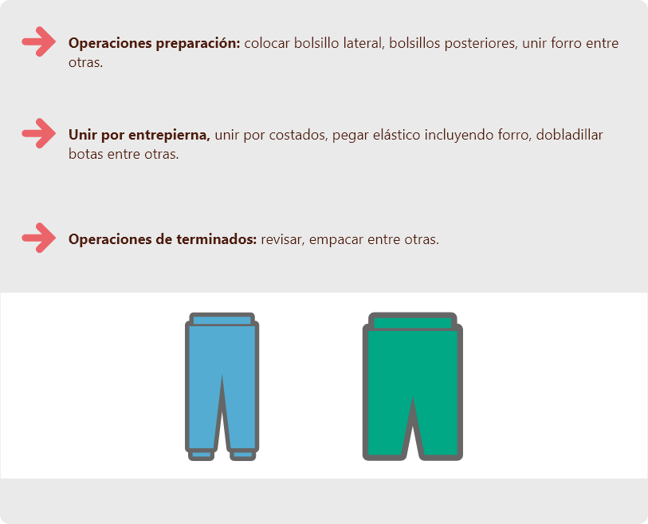2.5 Elaboración de conjunto deportivo top y leggins
Para la elaboración del top y del leggins, se utilizan además de maquinaria básicas, máquinas especiales como encauchadora para sentar el elástico.
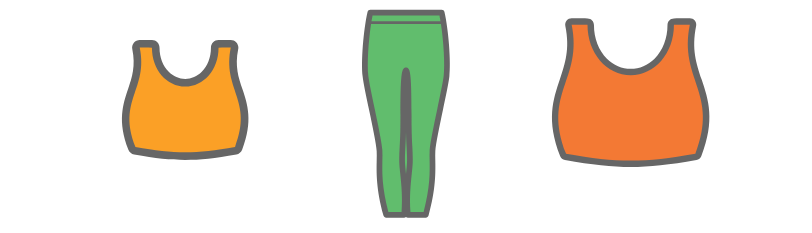Glosario
Atributos del producto:son las cualidades o características del producto como color, tamaño.
Defecto:es una no conformidad en características requeridas por el cliente o una norma y que causa incumplimiento del requisito y por tanto insatisfacción del cliente.
ISO:Organización Internacional de Estandarización, ubicada en Ginebra Suiza y tiene presencia en 193. Promueve y desarrolla normas para estandarizar productos y servicios.
Lote:número establecido de una producción, las cuales tienen características comunes y se agrupan dependiendo de un objetivo determinado.
Mariposa:pieza del panty ubicada entre el tiro y la entrepierna para proteger y dar comodidad en la parte íntima femenina.
Punto de control:son determinados con la metodología de árbol de decisión. Son las operaciones, faces o procesos que requieren realizar inspecciones para controlar la ocurrencia de defectos, lo cual es una medida preventiva.
Punto de control crítico:operaciones, faces o procesos que requiere de riguroso control debido a que representa alto riesgo de presentar defectos y por tanto no cumplir con los requisitos.
Sigma (σ):es una letra del alfabeto griego, utilizada en representar la desviación estándar (unidad estadística de medición), representa la dispersión o variabilidad de un conjunto de datos.
Variables de calidad:cuantificación de las cualidades del producto. Ejemplo: carta de colores de la prenda.
Material complementario
| Nombre del documento o material | Tipo de material | Enlace del recurso |
|---|---|---|
| ISO, Sistema de Gestion de Calidad 9001:2015. | Web | Ver |
Referencias bibliográficas
Equipo de Desarrollo Curricular, SENA Programa técnico control calidad en confección industrial, equipo de desarrollo curricular.
Six Sigma Lean solutions. (2020). [Blog]. Consultado el 22 de septiembre de 2020.http://leansolutions.co/conceptos-lean/que-es-six-sigma/
Servicio Nacional de Aprendizaje (SENA). (1973). Programa de control de calidad. Unidad 1.7. Normalización [E-book]. Consultado el 21 de septiembre de 2020.https://hdl.handle.net/11404/6667
Servicio Nacional de Aprendizaje (SENA). (1973). Programa de control de calidad. Unidad 1.9. Aspecto económico de la calidad [E-book]. Consultado el 21 de septiembre de 2020.https://hdl.handle.net/11404/6669
Servicio Nacional de Aprendizaje (SENA). (1990). Control de calidad en hilos y telas [E-book]. Consultado el 21 de septiembre de 2020.https://hdl.handle.net/11404/4252